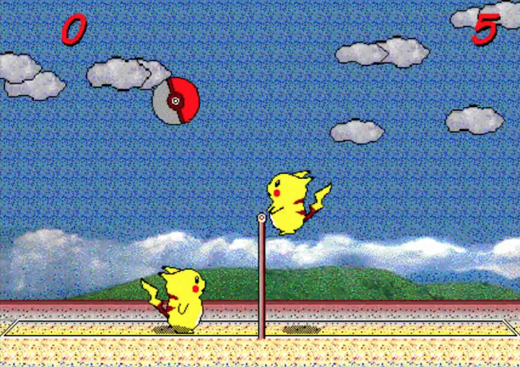
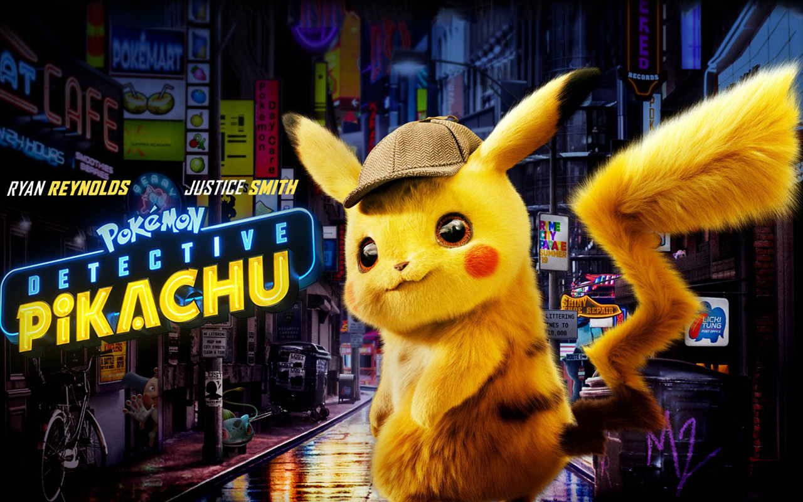

皮卡丘遊戲
皮卡丘排球
說到皮卡丘打排球，想必大家應該都不陌生。沒錯！這時候它的遊戲音樂，應該已經在你的腦海響起了。 這是一款1997年的神作，由Sachisoft(c)中一位迷之製作者Satoshi製作，可謂紅遍了大街小巷。可以單打 玩、也可以雙打對戰，簡簡單單一款遊戲，遊戲性卻大勝今天的許多3D遊戲。

精靈寶可夢 Let's Go！皮卡丘
『精靈寶可夢 Let's Go！皮卡丘』是在Nintendo Switch平台上登場的『精靈寶可夢』系列最新作。本作以1998年發售的Game Boy軟體『ポケットモンスター ピカチュウ』為基礎，對遊戲玩法及故事劇情進行了重新構築。透過融合『Pokémon GO』和Nintendo Switch的特徵，為玩家帶來全新的『精靈寶可夢』遊戲體驗。
皮卡丘電影
名偵探皮卡丘
名偵探皮卡丘是一部2019年美日合拍的真人動畫動作冒險奇幻懸疑片，由羅勃·萊特曼執導並與丹·埃爾南德斯（Dan Hernandez）、班傑·薩米特（Benji Samit）、德里克·康納利共同撰寫劇本。該片改編自2016年電子遊戲《名偵探皮卡丘》，由華納兄弟、傳奇娛樂和寶可夢公司共同製作。
